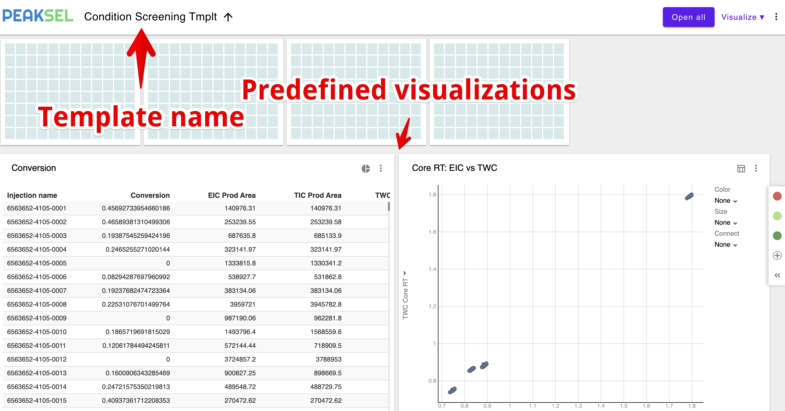

Visualization templates
It's important to standardize calculations and visualizations used in experiment analysis:
- It makes it possible to compare results of different experiments
- Allows spreading best practices developed by group leaders to the rest of the team
- Helps different groups understand each other
In Peaksel you can standardize by using predefined templates. Any Batch can be treated as a template, so you can set up all the necessary visualizations in the template Batch:
Now let's open another Batch and apply this template: